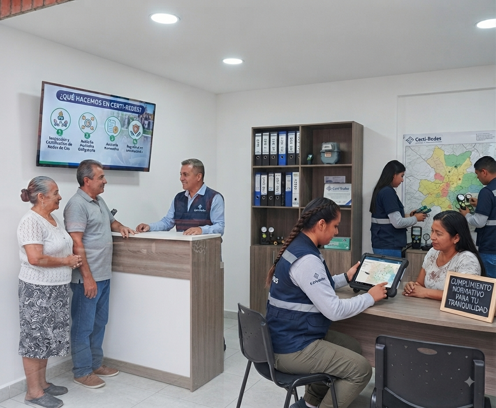
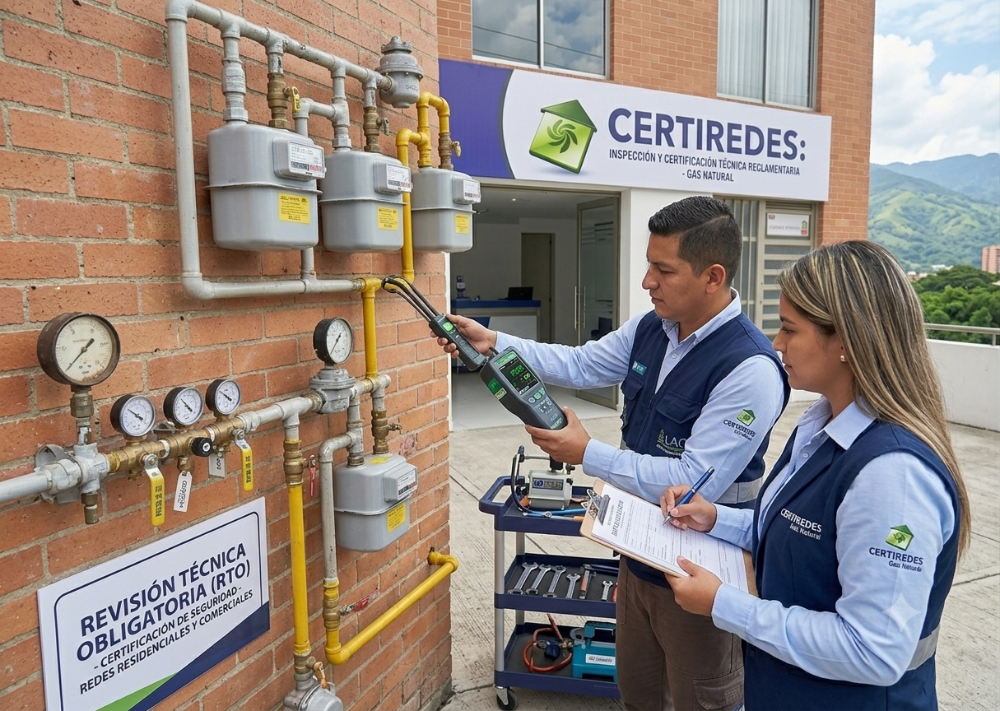

¿Desea utilizar nuestros servicios?
Acceda al portal para realizar solicitudes, consultar estados o descargar certificados.
¿Quiénes Somos en Certi-Redes?
Conoce más sobre nuestra labor en la certificación, instalación y seguridad de redes de gas.
CERTI-REDES
Certi-Redes S.A.S es un organismo de inspección acreditado que nació en Cali en diciembre de 2014, pero cuya trayectoria se remonta al año 2002, cuando iniciamos operaciones como Caferedes Ingeniería Ltda. Con más de dos décadas de experiencia y más de 400.000 inspecciones realizadas, hoy somos un referente en el sector de la seguridad y la certificación de redes internas de gas natural en Colombia.
Nuestro compromiso principal es garantizar que las instalaciones de gas natural en hogares, comercios y empresas cumplan con la normatividad vigente, minimizando riesgos y brindando tranquilidad a nuestros clientes. Desde julio de 2015 contamos con acreditación ONAC bajo la norma ISO/IEC 17020:2012, código 15-OIN-018, lo que respalda nuestra independencia, imparcialidad y altos estándares de calidad.


¿Qué hacemos?
En Certiredes ofrecemos el servicio de Revisión Técnica Reglamentaria (RTR), también conocida como revisión periódica, la cual debe realizarse cada 60 meses (5 años) en cumplimiento de la Resolución CREG 059 de 2012. Nuestro proceso incluye:
- Agendamiento de cita de forma sencilla y rápida.
- Visita de un inspector certificado directamente en la vivienda, local o empresa.
- Pruebas técnicas exhaustivas a las redes internas, verificando que cumplan los requisitos de seguridad.
- Entrega de un certificado oficial que garantiza el correcto estado de la instalación.
¿Por qué elegirnos?
- Experiencia comprobada: más de 20 años en el sector y cientos de miles de inspecciones realizadas.
- Cobertura regional: operamos en los departamentos de Valle del Cauca, Caldas, Quindío y Risaralda.
- Seguridad garantizada: nuestros inspectores cuentan con la formación, equipos y acreditaciones necesarias para ofrecer un servicio confiable.
- Atención personalizada: acompañamos al usuario durante todo el proceso, resolviendo dudas y brindando orientación.
- Compromiso social: trabajamos por la seguridad de las familias colombianas, contribuyendo a la prevención de incidentes y al cuidado de vidas.